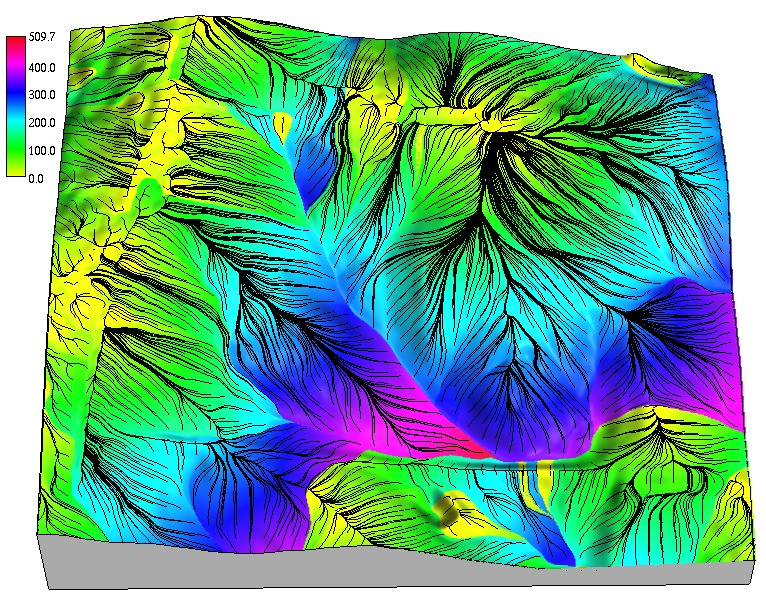

Flow routing and watershed analysis
Helena Mitasova
Learning objectives
- define cumulative terrain parameters based on flow routing
- understand methods for computing flow direction and flow routing
- identify methods for flow routing through depressions and flat areas
- understand principle of stream extraction from a DEM
- perform watershed delineation
Cumulative flow parameters
Flow routing over DEM is used to derive the following parameters and features:
- flow path length
- flow accumulation
- stream networks
- contributing areas
- watershed boundaries
Computing flow direction
What is flow direction:
- direction of surface gradient vector
- aspect (orientation of hillslope)
Methods to derive flow direction from a DEM?
- discrete: D8, D16
- continuous: D-infinity
Discrete flow direction
D8 algorithm
- aspect discretized to 8 directions: 0, 45, 90, ... degrees
- estimated from elevation differences between the given grid cell and its 8 neighboring cells
- flow direction is in the direction of maximum elevation difference

Continuous flow direction
D-infinity algorithm: gradient direction derived from a continuous function (polynomial or spline)

Flow routing
Tracing flow in the gradient direction to compute
- flowlines
- flow path length
- flow accumulation

Flow lines
- Lines along the steepest slope: in gradient direction
- Perpendicular to contours
- D8 flowlines - along grid lines and diagonals
- Dinf: linear interpolation of aspect along the grid cell edges to trace continuous flowlines

Flowlines derived using D-infinity algorithm
Flow path length
- length of a hillslope upslope from a given cell
- distance of given cell from the outlet


upslope flow tracing: hillslope length downslope flow tracing: distance from an outlet
The longest path to outlet
- length of the flow line from the grid cell that is the farthest from the outlet
- when water from this cell reaches outlet, all cells have drained to outlet
- the longest path to outlet is used to compute time to concentration (time to steady state flow)
Flow accumulation at grid cell
- number of flow lines generated from each cell passing through a given grid cell
- number of grid cells draining into a given grid cell
- size of the upslope contributing area for a given grid cell (horizontal area, in cell units)
- measure of steady state flow for uniform conditions

Flow accumulation across landscape
Evolution of steady state flow as water moves through the landscape
with steady rainfall and uniform flow velocity

Flow accumulation at steady state
Measure of steady state flow depth when all flowlines reached the outlet or the edge of the map

Flow accumulation represented as exagerrated 3D surface added to the elevation model highlights
the steady state flow accumulation
Flow routing methods
- Single Flow Direction (SFD) moves entire unit of flow into a single downslope cell:
does not capture flow dispersal on hillslopes with convex tangential curvature
- Multiple flow direction (MFD) partitions flow into two or more downslope directions
- both can be implemented with D8 or Dinf

D-inf SFD flow accumulation over convex hillsope (shoulder), note discrete stripes in flow direction
Flow routing methods
Flow accumulation as a result of SFD routing
with D8 and D-inf flow direction

Flow routing methods
Flow accumulation as a result of SFD and MFD routing with D8 flow direction
Weighted flow routing
Each cell is assigned weight proportional to the amount of runoff it produces
(rainfall excess available for runoff after infiltration and vegetation intercept)

Weighted flow routing
Spatially variable runoff reflects the impact of developed areas on flow accumulation


Stream extraction
- automated stream mapping: extracting connected stream network from flow accumulation map
- Stream raster map is derived using map algebra using flow accumulation threshold
- Result is converted to vector representation, build connected stream network
- Stream origin is dynamic, often driven by groundwater: additional information is needed,
machine learning can be used
Stream extraction
Flow accumulation from 30m NED, method: SFD D8, threshold accumulation: 100 cells,
and a vectorized extracted stream network

Flow routing in flat areas
- to create connected stream network flow needs to be routed through flats and depressions
- integer DEMs, lakes or filled depressions create flat areas
- flat areas: zero slope and undefined aspect
- solutions:
- iterative assignment of direction from the first draining cell
- imposed gradient (small change in elevation)
Flow routing through depressions
- depressions "trap" flow
- sources of depressions in DEMs:
- real features
- noise, measurements errors
- processing artifacts

Handling depressions
Filling, carving, hybrid, least cost path

Depressions filling: lidar DEM
Depressions in lidar-based DEM and flow accumulation using DEM filling

Depressions filling: radar DSM
Radar (SRTM, IFSARE) DSM include vegetation surface leading to complex, nested depressions
Filling alters elevation in large areas


Depressions: algorithm comparison
- Filling with single stream(black) and multiple parallel streams (grey) across filled depression
- Least cost path stream (red) and on-ground stream location from GPS (blue points)

Depressions: carving
Carving streams from digitized stream data may introduce artifacts, if the digitized streams
do not match the DEM
Hydrologically conditioned DEM
Modified DEM with connected stream network where each grid cell drains into the outlet
- hydrologically conditioned DEM does not have depressions or flat areas
- it should not be referred to as hydrologically correct, because - all wetlands are removed
Stream extraction accuracy
Measured as horizontal accuracy of stream centerline
- topographic maps (blue lines) - have often the lowest accuracy, old
- National Hydrographic Data - updated, structured representation of stream and river networks
- extracted from lidar-based DEMs - better, but accuracy low in coastal plane, improved new lidar mapping
- digitized from high resolution orthophotos and on ground surveys - most accurate except forested areas
- structures require additional information (bridges are represented as dams in DEMs)
Watersheds
- watershed - important land management unit
- water and mass from a watershed drains to a single point: outlet
- other terms for watershed: (drainage) basin, catchment, contributing area
- watersheds can be organized into hierarchies based on the size of contributing area
USGS Hydrologic units: hierarchy of drainage areas for national river network
see more at http://water.usgs.gov/GIS/huc.html